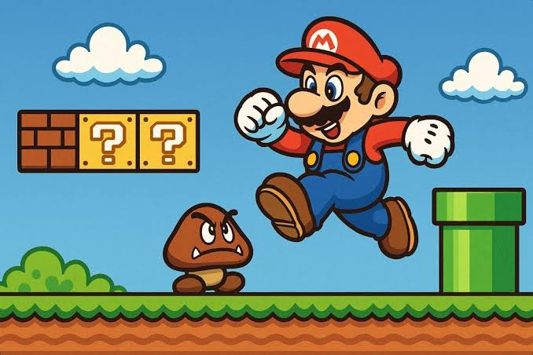
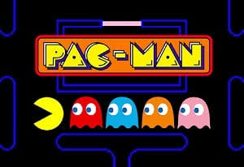
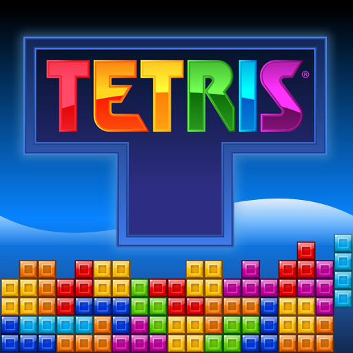

Jogos em Destaque

Super Mario Bros.
O clássico do Mario praticamente definiu o gênero de plataforma e salvou a indústria dos videogames nos anos 80. Hoje em dia, ambos continuam sendo os títulos mais procurados em emuladores, reedições oficiais do Nintendo Switch e na comunidade de speedrun.

Pac-Man
Símbolo supremo da era dos fliperamas. Suas mecânicas fáceis de aprender, mas difíceis de dominar, garantem sua popularidade até hoje em portáteis, lojas de aplicativos e máquinas de arcade espalhadas pelo mundo.

Tetris
É considerado o jogo de quebra-cabeça mais icônico de todos os tempos. Com mais de 500 milhões de cópias vendidas em centenas de plataformas, sua jogabilidade simples e viciante continua atraindo milhões de jogadores diariamente através de navegadores, celulares e emulações.